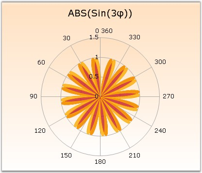

A Polar Chart is a circular graph on which data is displayed, in terms of values and angles. The x values define the angles at which the data points will be plotted. The y value defines the distance of the data points from the center of the graph, with the center of the graph usually starting at 0.
It is a form of graph that allows a visual comparison between several quantitative or qualitative aspects of a situation and also allows a visual comparison between several situations that are drawn using the same axes (poles).
Polar charts supports plotting the axis values in the reverse direction / clockwise direction also, by setting the Inversed property of axis to true.

Figure 82: Chart displaying Polar Series
Chart Details
|
Details | |
|
Number of Y values per point |
1. |
|
Number of Series |
One. |
|
Cannot be Combined with |
Any other chart types. |
Polar series can be added to the chart using the following code.
|
[C#]
// Create chart series and add data points into it. ChartSeries series = this.ChartWebControl1.Model.NewSeries ("Series Name",ChartSeriesType.Polar); series.Points.Add (0, 1); series.Points.Add (1, 3); series.Points.Add (2, 4);
// Add the series to the chart series collection. this.ChartWebControl1.Series.Add (series); |
|
[VB.NET]
' Create chart series and add data points into it. Dim series As ChartSeries = Me.ChartWebControl1.Model.NewSeries ("Series Name",ChartSeriesType.Polar) series.Points.Add (0, 1) series.Points.Add (1, 3) series.Points.Add (2, 4)
' Add the series to the chart series collection. Me.ChartWebControl1.Series.Add (series) |